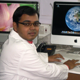
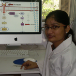

Overview
Introduction to Proteomics
A virtual laboratory is an innovative and valuable tool that will facilitate distance learning and experimentation for people who lack the resources. The Virtual Labs is an initiative of the Ministry of Human Resource Development (MHRD) under the National Mission on Education through ICT. It primarily aims to provide students and research scholars with an opportunity to view and remotely access labs across the country in various disciplines of science and engineering. These virtual laboratories are being developed with the help of modern day computer simulation technologies that provide a real-world feel and environment to enthuse students to learn basic and advanced experimental concepts. Students will be provided access to several learning aids such as video-lectures, animated demonstrations, audio and video footage of actual lab experiments, self evaluation quizzes and other web-based resources. Despite funding provided by many organizations, several institutions are unable to afford expensive equipments and instruments. In this context, web-based experiments designed for remote viewing will enable researchers to gain an in-depth understanding of experimental protocols and equipment handling, thereby further motivating scientific research.
The Proteomics Virtual Laboratory provides in-depth information about modern, high-throughput proteomic techniques available and their application to various proteomic studies. The field of proteomics has gained popularity following the successful completion of several genome sequencing projects and large amounts of gene data being made available to researchers. The genome, however, represents only the first step towards understanding complex biological processes. Significant amount of information regarding molecular and cellular processes can be obtained from the products of gene expression – the proteins. “Proteomics” is the study of the entire protein complement of a cell, organ or organism at a given time including the set of protein isoforms and all its complements. The high-throughput analysis of several proteins simultaneously requires robust platforms that can detect extremely small quantities of proteins with high sensitivity and specificity. The Proteomics Virtual Laboratory aims to provide students a first-hand experience of commonly used proteomic techniques with the help of animations and video footage of actual lab experiments. In addition to this, users will be provided reading material to enhance their theoretical knowledge about these techniques, which find wide applications such as discovery of biomarkers, immunological studies, protein-protein interaction studies etc. There has been a surge in the number of proteomics techniques developed over the last decade which have increasingly facilitated proteomics studies. The data generated through these experiments will also be made available, which will enable researchers and students to carry out data analysis and interpretation with the help of suitable software. The four modules planned for this lab will provide a comprehensive overall understanding about planning and performing an experiment using proteomic techniques to obtain significant data in a high-throughput manner.
Team
Our Team
 |
Dr. Sanjeeva SrivastavaAssistant ProfessorGroup Leader |
|  |  | |
Sandipan Ray,SRF, Ph.D. student |
Rekha Jain,SRF, Ph.D. student |
Panga Jaipal Reddy,JRF, Ph.D. student |
 |
 |
|
Bhushan. N. khabrikar,M.Tech Project Student |
Vinayak PachapurProject Staff |
Shaik KhajaAnimation Development |
 |
||
Rajneesh Srivastava,Project Assistant |
Kishore,Integrated Ph.D. Student |
Samridhi SharmaJRF , Project Staff |
|
Aishwarya Rao Research Associate
|
Contactus